Identification is how you link the result you see with the conclusion you draw from it
For example, say you observe that kids who play video games are more aggressive in everyday life (result), and you conclude from that result that video games make kids more aggressive (conclusion)
If seeing that result is actually evidence for that conclusion, then we are properly identified
Identification Error
Another reason why we might see that result, i.e. if the same result could give us a different conclusion, like kids who are aggressive play more video games or people notice aggression more when kids play video games, then
we have made an identification error* - our result was not identified!*
Identification error is when your result in the data doesn’t actually have a clear theory (“why” or “because”)
For example, if you observe that people tend to wear more shorts on days they eat more ice cream, and you conclude that eating ice cream makes you put on shorts
Data Generating Process
To avoid identification error, economists think closely about the data generating process
What is a data generating process?
The data generating process is the true set of laws that determine where our data comes from
For example, if you hold a rock and drop it, it falls to the floor
What is the data we observe? (Hold the rock & Rock is up) and (Let go & Rock is down)
What is the data generating process? Gravity makes the rock fall down when you drop it
Data Generating Process
Another example is a model of supply and demand
We observe prices and quantities in a competitive market
What led to those being the prices and quantities we see?
The supply and demand model and its equilibrium, we theorize!
Data Generating Process
ggplot(tibble(x =c(1:100,1:100), y =c(100:1, 1:100), linetype =c(rep('Theoretical D',100),rep('Theoretical S',100))),aes(x=x, y=y, linetype = linetype))+geom_line(size =1.5, color ='black') +geom_text_repel(aes(label = linetype, x = x +2), method ='last.bumpup', size =16/.pt, nudge_x =2) +scale_x_continuous(limits =c(1, 120)) +geom_point(data =tibble(x =50.5, y =50, linetype ='x'), color ='red', size =8) +annotate(geom ='text', x =53, y =50, color ='red', label ='Observation', hjust =0, size =16/.pt) +labs(x ="Q", y ="P") +theme_metro()
Warning: Using `size` aesthetic for lines was deprecated in ggplot2 3.4.0.
ℹ Please use `linewidth` instead.
Warning in geom_text_repel(aes(label = linetype, x = x + 2), method =
"last.bumpup", : Ignoring unknown parameters: `method`
Warning: ggrepel: 196 unlabeled data points (too many overlaps). Consider
increasing max.overlaps
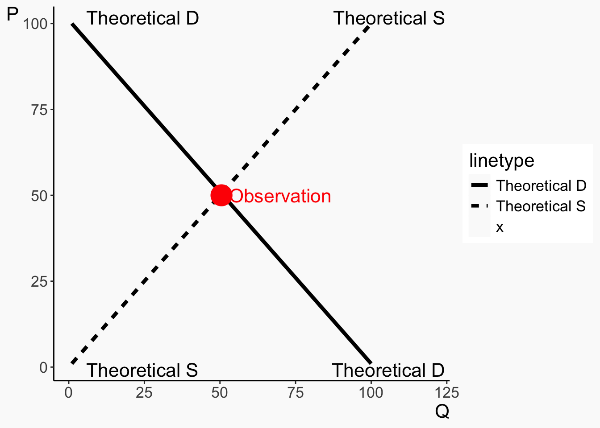
Data Generating Process
The prices that we observe come from that theoretical construct
When we see the prices and quantities moving, according to our theory, it is because the S and D lines are moving
But we cannot see the S and D lines
Our goal: use the observations we do see to infer what the theoretical model (data generating process) is
Data Generating Process
Harder than it sounds. What inference about S and D can we draw from these observations?
ggplot(tibble(x =c(25,35,25,50,60), y =c(35,22,75,54,80)),aes(x=x, y=y))+geom_point(size =6, color ='red') +scale_x_continuous(limits =c(1, 120)) +scale_y_continuous(limits =c(0,100)) +labs(x ="Q", y ="P") +theme_metro()
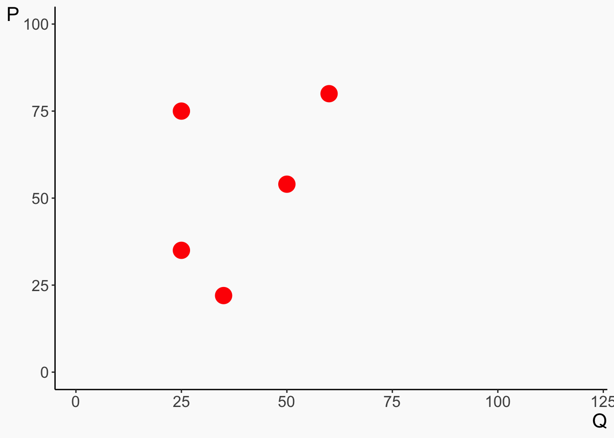
Causality
A data generating process can be described by a series of equations that describe where the data comes from. For example:
\[ X = \gamma_0 + \gamma_1\varepsilon + \nu \]
\[ Y = \beta_0 + \beta_1X + \varepsilon \]
This says ” \(X\) is caused by \(\varepsilon\) and \(\nu\), and \(Y\) is caused by \(X\) and \(\varepsilon\)”
The truth is that an increase in \(X\)causally increases \(Y\) by \(\beta_1\)
The goal of econometrics is to be able to estimate what \(\beta_1\) is accurately
Causality
We can also represent this set of relationships as a graph, with arrows telling you what variables cause each other
dag <-dagify(X ~ epsilon + nu, Y ~ X + epsilon,coords =list(x =c(X =1, Y =3, nu =1, epsilon =2),y =c(X =1, Y =1, nu =2, epsilon =2)))ggdag_classic(dag, size =5) +theme_dag_blank() +theme(panel.background =element_rect(color ='#FAFAFA',fill='#FAFAFA'),plot.background =element_rect(color ='#FAFAFA',fill='#FAFAFA'))
Causality
We do this because most of the relationships we’re interested in are causal - we want to know, if we could reach in and manipulate\(X\), would \(Y\) change as a result, and how much?
Does the minimum wage reduce employment?
Does quantitative easing avert recessions?
Does six-sigma improve business performance?
Does getting an MBA make you a better manager?
Regressions
In statistics, regression is the practice of line-fitting
We want to use one variable to predict another
Let’s say using \(X\) to predict \(Y\)
We’d refer to \(X\) as the “independent variable”, and \(Y\) as the “dependent variable” (dependent on \(X\) that is)
Regression is the idea that we should characterize the relationship between \(X\) and \(Y\) as a line, and use that line to predict \(Y\)
\(X\) and \(Y\)
I have an \(X\) value of 2.5 and want to predict what \(Y\) will be. What can I do?
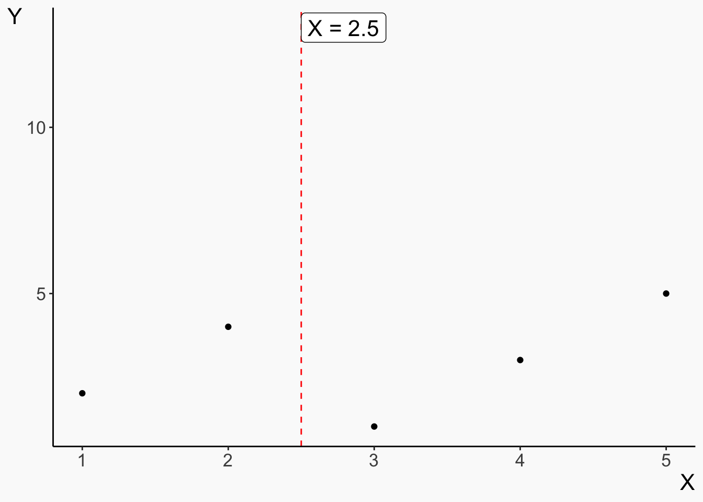
\(X\) and \(Y\)
I can’t just say “just predict whatever values of \(Y\) we see for \(X = 2.5\), because there are multiple of those!
Plus, what if we want to predict for a value we DON’T have any actual observations of, like \(X = 4.3\)?
Warning: Could not calculate the predicate for layer 3, layer 5; ignored
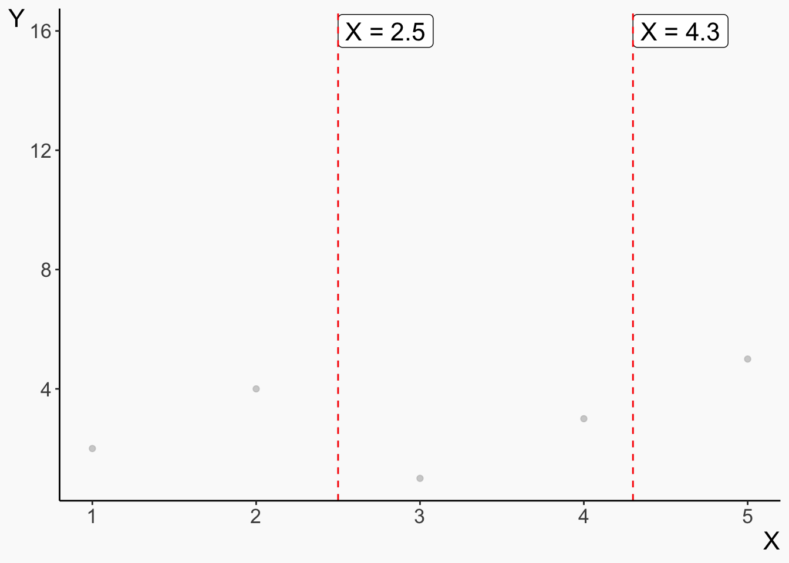
Data is Granular
If I try to fit every point, I’ll get a mess that won’t really tell me the relationship between \(X\) and \(Y\)
So, we simplify the relationship into a shape: a line! The line smooths out those three points around 2.5 and fills in that gap around 4.3
`geom_smooth()` using formula = 'y ~ x'
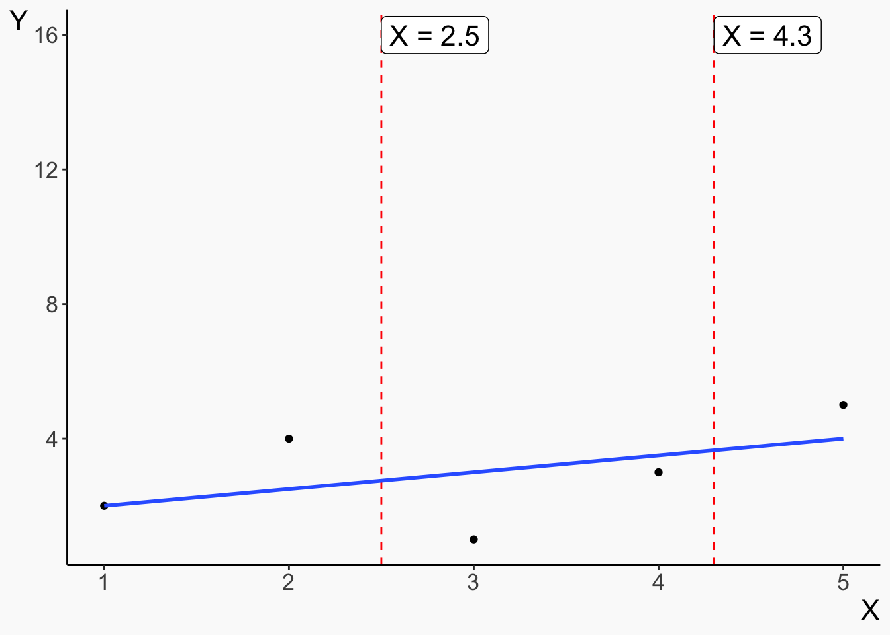
Isn’t This Worse?
By adding a line, we are necessarily simplifying our presentation of the data. We’re tossing out information!
Our prediction of the data we have will be less accurate than if we just make predictions point-by-point
However, we’ll do a better job predicting other data (avoiding “overfitting”)
And, since a shape is something we can interpret, as opposed to a long list of predictions, which we can’t really, the line will do a better job of telling us about the true underlying relationship
The Line Does a Few Things:
We can get a prediction of \(Y\) for a given value of \(X\) (If we follow \(X = 2.5\) up to our line we get \(Y = 7.6\))
We see the relationship: the line slopes up, telling us that “more \(X\) means more \(Y\) too!”
Warning in geom_segment(aes(x = 2.5, xend = 2.5, y = 0, yend = 7.5526), : All aesthetics have length 1, but the data has 5 rows.
ℹ Please consider using `annotate()` or provide this layer with data containing
a single row.
Warning in geom_segment(aes(x = 4.3, xend = 4.3, y = 0, yend = 12.82084), : All aesthetics have length 1, but the data has 5 rows.
ℹ Please consider using `annotate()` or provide this layer with data containing
a single row.
Warning in geom_segment(aes(x = 0, xend = 2.5, y = 7.5526, yend = 7.5526), : All aesthetics have length 1, but the data has 5 rows.
ℹ Please consider using `annotate()` or provide this layer with data containing
a single row.
Warning in geom_segment(aes(x = 0, xend = 4.3, y = 12.82084, yend = 12.82084), : All aesthetics have length 1, but the data has 5 rows.
ℹ Please consider using `annotate()` or provide this layer with data containing
a single row.
`geom_smooth()` using formula = 'y ~ x'
Lines
That line we get is the fit of our model
A model “fit” means we’ve taken a shape (our line) and picked the one that best fits our data
All forms of regression do this
Ordinary least squares specifically uses a straight line as its shape
The resulting line we get can also be written out as an actual line, i.e.
\[ Y = intercept + slope*X \]
Lines
We can use that line as… a line!
If we plug in a value of \(X\), we get a prediction for \(Y\)
Because these \(Y\) values are predictions, we’ll give them a hat \(\hat{Y}\)
\[ Y = 3 + 4*X \]
\[ \hat{Y} = 3 + 4*(3.2) \]
\[ \hat{Y} = 15.8 \]
Lines
We can also use it to explain the relationship
Whatever the intercept is, that’s what we predict for \(Y\) when \(X = 0\)
\[ Y = 3 + 4*X \]
\[ \hat{Y} = 3 + 4*0 \]
\[ \hat{Y} = 3 \]
Lines
And as \(X\) increases, we know how much we expect \(Y\) to increase because of the slope
\[ Y = 3 + 4*X \]
\[ \hat{Y} = 3 + 4*3 = 15 \]
\[ \hat{Y} = 3 + 4*4 = 19 \]
When \(X\) increases by \(1\), \(Y\) increases by the slope (which is \(4\) here)
Ordinary Least Squares
Regression fits a shape to the data
Ordinary least squares specifically fits a straight line to the data
The straight line is described using an \(intercept\) and a \(slope\)
When we plug an \(X\) into the line, we get a prediction for \(Y\), which we call \(\hat{Y}\)
When \(X = 0\), we predict \(\hat{Y} = intercept\)
When \(X\) increases by \(1\), our prediction of \(Y\) increases by the \(slope\)
If \(slope > 0\), \(X\) and \(Y\) are positively related/correlated
If \(slope < 0\), \(X\) and \(Y\) are negatively related/correlated
Concept Checks
How does producing a line let us use \(X\) to predict \(Y\)?
If our line is \(Y = 5 - 2*X\), explain what the \(-2\) means in a sentence
Not all of the points are exactly on the line, meaning some of our predictions will be wrong! Should we be concerned? Why or why not?
How?
We know that regression fits a line
But how does it do that exactly?
It picks the line that produces the smallest squares
Thus, “ordinary least squares”
Predictions and Residuals
Whenever you make a prediction of any kind, you rarely get it exactly right
The difference between your prediction and the actual data is the residual
\[ Y = 3 + 4*X \]
If we have a data point where \(X = 4\) and \(Y = 18\), then
\[ \hat{Y} = 3 + 4*4 = 19 \]
Then the residual is \(Y - \hat{Y} = 18 - 19 = -1\).
Predictions and Residuals
So really, our relationship doesn’t look like this…
\[ Y = intercept + slope*X \]
Instead, it’s…
\[ Y = intercept + slope*X + residual \]
We still use \(intercept + slope*X\) to predict \(Y\) though, so this is also
\[ Y = \hat{Y} + residual \]
Ordinary Least Squares
As you’d guess, a good prediction should make the residuals as small as possible
We want to pick a line to do that
And in particular, we’re going to square those residuals, so the really-big residuals count even more. We really don’t want to have points that are super far away from the line!
Then, we pick a line to minimize those squared residuals (“least squares”)
Ordinary Least Squares
Start with our data
tb2 <-tibble(X =c(1,3,5,6.5), Y =c(2,6, 3.6, 8)) %>%mutate(line1 =1.5+ X,line2 =2+ .6*X,line3 =1.7324+ .8175*X)ggplot(tb2, aes(x = X, y = Y)) +geom_point(size =4) +expand_limits(x =c(0,7), y =c(1,9))+theme_metro() +coord_fixed()
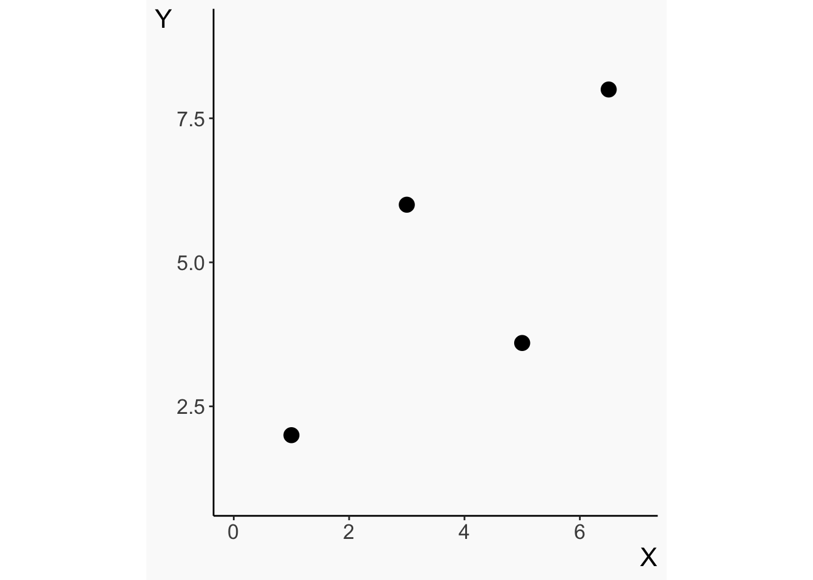
Ordinary Least Squares
Let’s just pick a line at random, not necessarily from OLS
ggplot(tb2, aes(x = X, y = Y)) +geom_point(size =4) +expand_limits(x =c(0,7), y =c(1,9))+theme_metro() +coord_fixed() +geom_line(aes(x = X, y = line1), color ='blue', size =1.5)
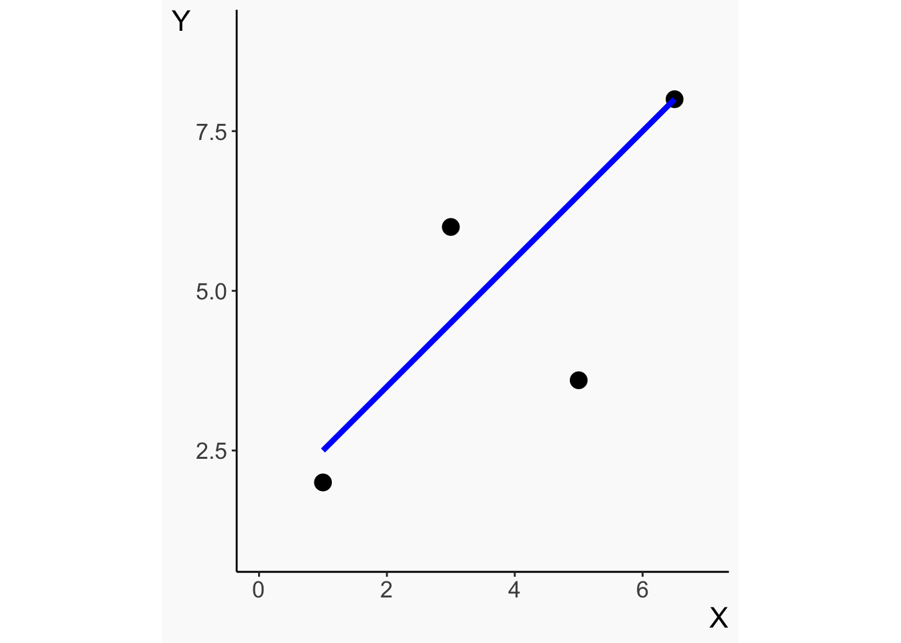
Ordinary Least Squares
The vertical distance from point to line is the residual
ggplot(tb2, aes(x = X, y = Y)) +geom_point(size =4) +expand_limits(x =c(0,7), y =c(1,9))+theme_metro() +coord_fixed() +geom_segment(aes(x = X, xend = X, y = Y, yend = line1), size =1.5) +geom_line(aes(x = X, y = line1), color ='blue', size =1.5)
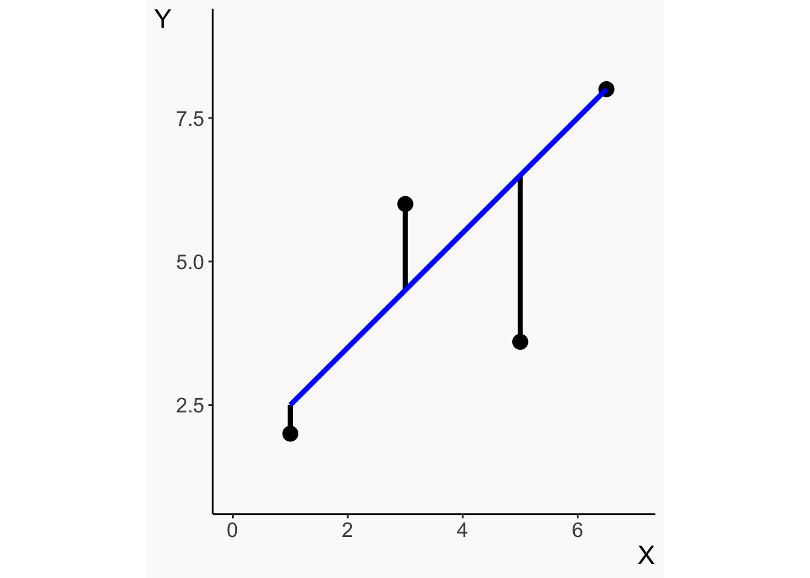
Ordinary Least Squares
Now square those residuals
ggplot(tb2, aes(x = X, y = Y)) +geom_point(size =4) +expand_limits(x =c(0,7), y =c(1,9))+theme_metro() +geom_rect(aes(xmin = X, xmax = X +abs(line1 - Y), ymin = Y, ymax = line1), alpha = .5, fill ='gray') +geom_line(aes(x = X, y = line1), color ='blue', size =1.5) +coord_fixed()
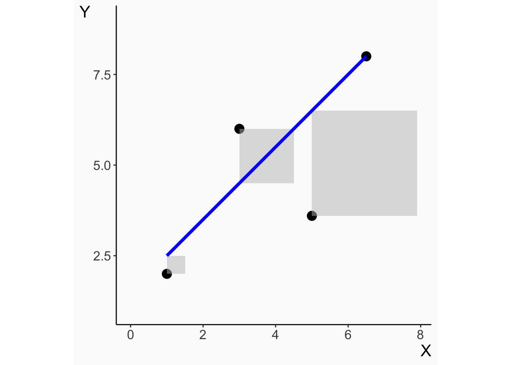
Ordinary Least Squares
Can we get the total area in the squares smaller with a different line?
ggplot(tb2, aes(x = X, y = Y)) +geom_point(size =4) +expand_limits(x =c(0,7), y =c(1,9))+theme_metro() +geom_rect(aes(xmin = X, xmax = X +abs(line2 - Y), ymin = Y, ymax = line2), alpha = .5, fill ='gray') +geom_line(aes(x = X, y = line2), color ='blue', size =1.5) +coord_fixed()
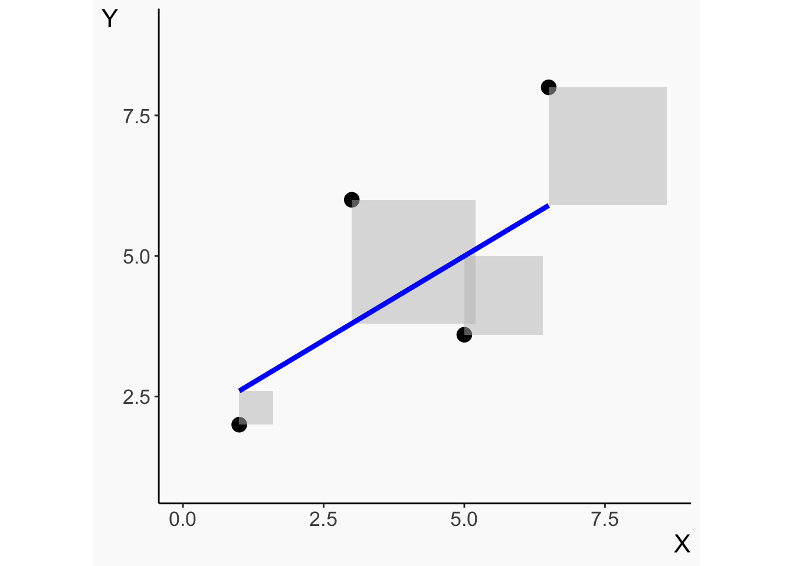
Ordinary Least Squares
Ordinary Least Squares, I can promise you, gets it the smallest
ggplot(tb2, aes(x = X, y = Y)) +geom_point(size =4) +expand_limits(x =c(0,7), y =c(1,9))+theme_metro() +geom_rect(aes(xmin = X, xmax = X +abs(line3 - Y), ymin = Y, ymax = line3), alpha = .5, fill ='gray') +geom_line(aes(x = X, y = line3), color ='blue', size =1.5) +coord_fixed()
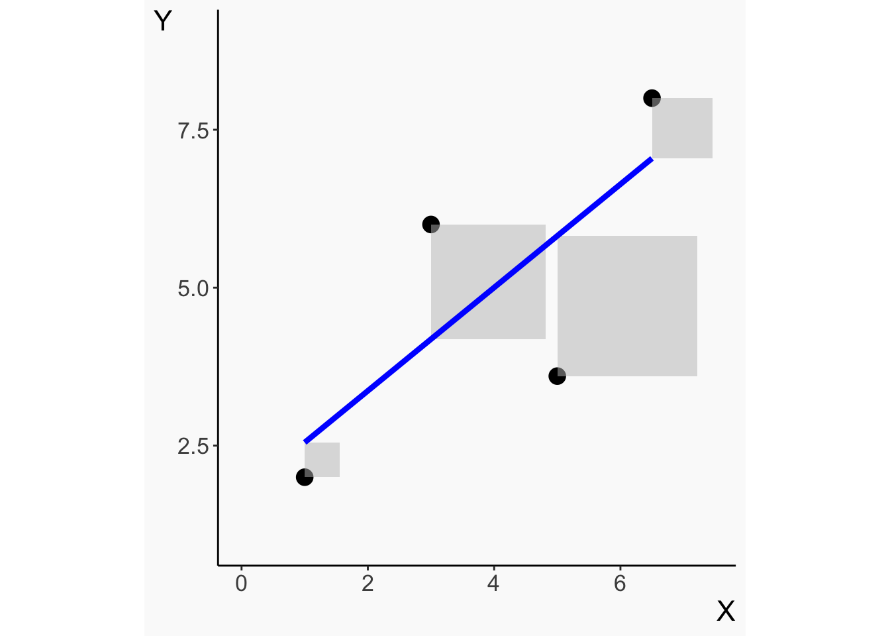
Ordinary Least Squares
How does it figure out which line makes the smallest squares?
There’s a mathematical formula for that!
First, instead of thinking of \(intercept\) and \(slope\), we reframe the line as having parameters we can pick
\[ Y = intercept + slope*X + residual \]
\[ Y = \beta_0 + \beta_1X + \varepsilon \]
Terminology Sidenote
\[ Y = \beta_0 + \beta_1X + \varepsilon \]
In metrics, Greek letters represent “the truth” - in the true process by which the data is generated, a one-unit increase in \(X\) is related to a \(\beta_1\) increase in \(Y\)
When we put a hat on anything, that is our prediction or estimation of that true thing. \(\hat{Y}\) is our prediction of \(Y\), and \(\hat{\beta_1}\) is our estimate of what we think the true \(\beta_1\) is
Note “residual” =/= \(\varepsilon\) - residuals are what’s actually left over from our prediction with real data, but the error\(\varepsilon\) is the true difference between our line and \(Y\).
Try different data generating processes and standard deviations
What settings make the residuals small or large? Any guesses why?
What happens if you take the intercept out? What does that make our line do?
How close does the line come to the data generating process? Intercept and slope are in the second table below the graph under “Estimate”
Concept Checks
Why might we want to minimize squared residuals rather than just residuals?
What’s the difference between a residual and an error?
If I have the below OLS-fitted line from a dataset of children:
\[ Height (Inches) = 18 + 2*Age\]
And we have the kids Darryl who is 10 years old and 40 inches tall, and Bijetri who is 9 years old and 37 inches tall, what are each of their: (a) predicted values, (b) residuals, and then what is the sum of their squared residuals?
Recap
Regression is the practice of fitting a shape to data so as to explain the relationship more generally
Ordinary least squares fits a straight line
It picks the straight line that minimizes the sum of squared residuals
That line has an intercept \(\beta_0\) (Our prediction \(\hat{Y}\) when \(X = 0\)) and a slope \(\beta_1\) (how much higher we predict \(Y\) will be when we look at an \(X\) one unit higher)
The residual is the difference between our prediction \(\hat{Y} = \hat{\beta}_0 + \hat{\beta}_1X\) and the actual number \(Y\)
\[ Y = \beta_0 + \beta_1 X + \varepsilon \]\[ \hat{Y} = \hat{\beta}_0 + \hat{\beta}_1X \]